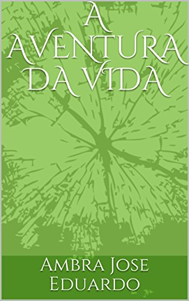

Livros de Aventura
As Aventuras De Robin Hood

Ambientado na Inglaterra nos séculos XII e XIII,em especial sob o tumultuado reinado de Ricardo Coração de Leão,o livro traz as peripécias do fora da lei e seu bando dos alegres homens da floresta em busca de justiça e igualdade e também de diversão.Nas matas de Sherwood e Barnsdale, acompanhamos os embates de Robin com o xerife de Nottingham, sua história de amor com milady Marian e sua parceria com o leal João Pequeno e frei Tuck,tudo isso,e muito mais,na narrativa ágil e mordaz que é marca registrada do autor.
O Arco da Aliança

Embarque em uma aventura que começou logo após o segundo dilúvio.O clima mudou. A imensidão de gelo dos polos derreteu.O avanço tecnológico acabou. Como nos tempos bíblicos de Noé, todos navegam em um mundo inundado por chuvas intensas.
Uma ventura na Casa Mal Assombrada
Que campo de férias sensacional!E depois uns dias na casa da família da Filipa. Mas passam-se coisas tão estranhas... A casa estará mesmo assombrada?Assustadora e emocionante,esta é com certeza a melhor aventura da colecção! "Ana Maria Magalhães nasceu em Lisboa a 14 de abril de 1946, no seio de uma enorme família onde as crianças ocupavam o primeiro lugar.
Pinóquio

Pinóquio é uma das personagens mais célebres da literatura infantil e juvenil.Texto integral, com uma tradução cuidada, feita a partir do italiano.Pinóquio está longe de ser um rapaz como os outros. Na verdade, ele é apenas um boneco. Um boneco de madeira, feito pelo seu pai, o velho carpinteiro Geppetto.
Aventura em Atlântida
A narrativa se passa dias antes do desaparecimento total do continente, por isso, para salvar as suas vidas, precisam ser rápidos e espertos, mas nada é tão fácil, enfrentam desde criaturas Mitológicas, como o Bucentauro e o Cérbero, até perseguições incentivadas por Dombor, o general ambicioso do exército atlante.
As Crônicas de Nárnia

As Crônicas de Nárnia.Onde o universo de realidade e fantasia se misturam em uma jornada épica,que agradou crianças,dolescentes e adultos desde que o primeiro livro,O Leão,A Feiticeira e O Guarda-Roupa foi lançado em 1950.Diversos paralelos com as histórias encontradas na bíblia foram feitos por especialistas ao longo dos anos.Mesmo nunca tendo sido confirmada,As Crônicas de Nárnia é uma série que vale a pena ler em qualquer parte da sua vida.
Percy Jackson E o ladrão de raios

Percy Jackson está prestes a ser expulso do colégio interno… novamente. E esse é o menor dos seus problemas. Ultimamente, criaturas fantásticas e os deuses do Olimpo parecem estar a sair das páginas do seu livro de mitologia para entrarem na sua vida. E o pior de tudo é que ele parece ter enfurecido alguns deles. O raio-mestre de Zeus foi roubado e Percy é o principal suspeito.
Sherlock Holmes
As Aventuras de Sherlock Holmes,publicado pela primeira vez em 1892.Sempre coadjuvado pelo inestimável Doutor Watson,Sherlock Holmes nunca deixa por resolver os casos que lhe são apresentados Graças ao método lógico-dedutivo,Holmes,sempre coadjuvado pelo inestimável Doutor Watson,nunca deixa por resolver os casos que lhe são apresentados.consegue sempre surpreender os leitores com as suas deduções, recorrendo às coisas mais triviais para solucionar mistérios aparentemente insolvíveis, com a inteligência e a acutilância que o transformaram numa das mais brilhantes e fascinantes personagens da Literatura policial.
A aventura de Vida

Um romance de ficção que explica porque as crianças que nascem nos dias de hoje tem muito mais aptidão e habilidade do que as gerações passadas e são designadas como Geração Cristal.
O Código de Camões
Uma declaração sem pé nem cabeça de uma professora do Timor-Leste que logo em seguida,desaparece.Uma carta misteriosa deixada pelo poeta Luís de Camões,que revela a existência de um valioso tesouro escondido no Brasil.Um código secreto a ser decifrado nos versos de Os lusíadas.Um objeto que teria poderes mágicos, chamado portulábio e um grupo de adolescentes,Os Natos,vão fazer de tudo para provar que a língua portuguesa ainda está viva nos quatro cantos do mundo.Envolto nessa aventura cheia de mistérios,o leitor interage com o livro para decifrar as pistas.